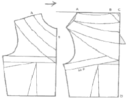
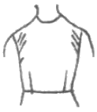
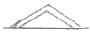
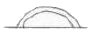
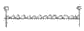

양장기능사 (2014-04-06 기출문제)
1과목: 임의 구분
1. 의복 종류에 따른 제도 시 길 원형에 사용하는 약자가 아닌 것은?
- W.L
- B.L
- H.L
- C.L
(정답률: 58%)

2. 겨드랑이 부분이 끼며 품이 좁을 때의 보정방법으로 가장 적합한 것은?
- 앞뒷길의 옆선에서 품을 넓혀 준다.
- 앞뒷길의 어깨끝점 부분을 올려 준다.
- 앞뒷길의 어깨끝점 부분을 내려 준다.
- 진동둘레가 넓어지지 않도록 겨드랑이 부분을 올려 준다.
(정답률: 69%)
3. 봉제할 때 옷감에 적합한 재봉실을 선택하는 방법으로 옳은 것은?
- 실의 굵기 표시방법은 번수만 사용하면 된다.
- 재봉사는 옷감과 같은 재질을 선택한다.
- 혼방직물일 때 혼용률이 낮은 재료를 선택한다.
- 수지가공의 옷감에는 방축 가공된 재봉사는 피한다.
(정답률: 83%)
4. 다음 중 패턴에 표시하지 않아도 되는 것은?
- 중심선
- 안단선
- 단추의 모양
- 포켓다는 위치
(정답률: 90%)
5. 다음 그림에 나타난 패턴의 네크라인 종류는?

- 하이 네크라인(high neckline)
- 라운드 네크라인(round neckline)
- 카울 네크라인(cowl neckline)
- 스퀘어 네크라인(square neckline)
(정답률: 84%)
6. 다음 그림과 같이 진동둘레에 사선의 군주름이 생길 경우 보정 방법으로 옳은 것은?

- 목둘레선을 높여 앞뒤판을 맞춘다.
- 어깨선을 군주름 분량만큼 시침 보정하여 내려주고 어깨 처진 만큼 진동 둘레 밑부분도 내려 준다.
- 어깨선을 올려서 보정하고 진동둘레 밑부분도 올려 준다.
- 목둘레가 좁은 경우이므로 목둘레선을 파 준다.
(정답률: 70%)
7. 옷감의 손질 방법으로 옳은 것은?
- 옷감을 침수시킬 때는 되도록 많이 접어서 담근다.
- 확실한 내용의 표시가 없는 것은 섬유의 감별법에 의한다.
- 다람질은 온도를 섬유의 종류에 맞추어 가로방향으로만 다린다.
- 수지가공에서 방축, 방추, 상수가공이 되어 있는 옷감은 다림질로 다려 구김살을 펴지 않아도 된다.
(정답률: 70%)
8. 재단할 때의 주의사항으로 옳은 것은?
- 한 겹 옷일 경우에는 안단을 따로 재단한다.
- 안단의 시접은 칼라의 형태에 관계없이 모두 같게 접는다.
- 바이어스 테이프를 장식으로 댈 때에는 시접을 반드시 넣는다.
- 무늬있는 옷감은 위의 한 장을 자른 후에 아래의 무늬를 확인하면서 자른다.
(정답률: 74%)
9. 다음 중 길 원형의 프린세스 라인 구성이 아닌 것은?
- 숄더 다트와 웨이스트 다트
- 암 홀 다트와 웨이스트 다트
- 숄더 포인트 다트와 웨이스트 다트
- 언더 암 다트와 웨이스트 다트
(정답률: 62%)
10. 제도에 사용하는 약아 중 C.B.L의 의미는?
- 앞중심선
- 뒷중심선
- 가슴둘레선
- 허리둘레선
(정답률: 84%)
11. 주름 잡는 위치에 따라 종류가 달라지며, 주름 잡는 모양에 따라 슬리브 모양과 어깨 모양이 달라지는 슬리브는?
- 퍼프 슬리브(puff sleeve)
- 비숍 슬리브(bishop sleeve)
- 케이프 슬리브(cape sleeve)
- 타이트 슬리브(tight sleeve)
(정답률: 74%)
12. 각 부위의 기본 시접 분량 중 가장 적합하지 않은 것은?
- 목둘레-1cm
- 옆선-2cm
- 어깨선-2cm
- 소매단-5cm
(정답률: 92%)
13. 다음 의복제도 부호의 의미는?
- 꺽임선
- 완성선
- 안단선
- 골선
(정답률: 90%)
14. 심지의 종류 중 여러 종류의 섬유를 얇게 펴서 접착제를 사용하여 접착시킨 심지로, 가볍고 올리 풀리지 않으며 올의 방향이 없어 사용에 간편한 심지는?
- 마심지
- 면심지
- 모심지
- 부직포
(정답률: 83%)
15. 의복 제작 시 본봉으로 들어가기 전 가봉할 때의 주의 사항 중 틀린 것은?
- 바느질 방법은 손바느질의 상침 시침으로 한다.
- 실은 면사로 하되 얇은 감은 한 몰로, 두꺼운 감은 두 올로 한다.
- 바늘은 옷감에 직각으로 꽂아 옷감이 울지 않게 하고 실이 늘어지지 않게 한다.
- 바이어스 감과 직선으로 재단된 옷감을 붙일 때는 바이어스 담을 아래로 위치한 후 바느질한다.
(정답률: 78%)
16. 원형제도 방법 중 장촌식 제도법에 해당되는 것은?
- 인체의 각 부위를 세밀하게 계측한다.
- 체향 특징에 잘 맞는 원형을 얻을 수 있다.
- 인체부위 중 가장 대표적인 부위만 측정한다.
- 계측이 서투른 초보자에게는 바람직하지 못하다.
(정답률: 76%)
17. 다음 중 다람질 온도가 가장 높은 섬유는?
- 면
- 양모
- 아마
- 폴리에스테르
(정답률: 57%)
18. 플레어 스커트 중 45° 각도를 이루고 두 개의 선을 먼저 긋고, 그 선에 맞추어 스커트의 절게선을 벌려 주는 것은?
- 벨 플레어 스커트
- 서큘러 플레어 스커트
- 요크를 댄 플레어 스커트
- 세미 서큘러 플레어 스커트
(정답률: 61%)
19. 체형과 관련된 설명 중 틀린 것은?
- 앞으로 굽은 체형-등이 굽어진 체형으로 앞품이 부족하기 쉽다.
- 어깨가 솟은 체형-어깨의 경사로 인해 암홀의 길이가 변화한다.
- 배가 나온 체형-스커트의 경우 밑단을 충분히 주어야 들리지 않는다.
- 목이 굽은 체형-앞, 뒤의 목둘레가 변화한다.
(정답률: 82%)
20. 상반신에서 둘레의 최대치를 나타내는 위치는?
- 목둘레선
- 진동둘레선
- 가슴둘레선
- 허리둘레선
(정답률: 87%)
2과목: 임의 구분
21. 연단 방법 중 옷감이 감긴 롤러를 돌려가면서 연단해야 하기 때문에 인력 소모가 가장 큰 것은 ?
- 표면대향 연단
- 무방향 연단
- 양방향 연단
- 한방향 연단
(정답률: 60%)
22. 다트 머니퓨레이션(manipulation)의 정의로 옮은 것은?
- 다트의 위치를 이동시켜 새로운 원형을 만드는 과정
- 활동에 불편이 없도록 원형으 ㄹ변화 시키는 작업
- 이상체형의 변화를 원형에서 수정하는 작업
- 길원형의 다트를 생략하는 과정
(정답률: 80%)
23. 슬기 가장자리를 장식하는 것으로 바이어스보다 선을 가늘게 나타낸 것은?
- 셔링
- 스모킹
- 파이핑
- 개더링
(정답률: 77%)
24. 옷감과 패턴의 배치에 대한 설명으로 옮은 것은?
- 무늬가 있는 옷감은 왼쪽과 오른족을 다른 무늬로 배치한다.
- 짧은 털이 있는 옷감은 털의 결 방향을 아래로 배치한다.
- 옷감의 표면이 밖으로 되게 반을 접어 패턴을 배치한다.
- 패턴은 큰 것부터 배치하고 작은 것은 큰 것 사이에 배치한다.
(정답률: 87%)
25. 원가계산방법중 총원가에 해당하는 것은?
- 제조원가 + 판매간접비 + 일반관리비
- 재료비 + 인건비 + 제조경비
- 판매가 – 총원가
- 총원가 + 이익
(정답률: 51%)
26. 제도에 필요한 부호 중 ‘오그림’에 해당하는 것은?



(정답률: 82%)
27. 공업용 재봉기의 대분류에서 표기기호가 틀린 것은?
- 본봉 : L
- 복합봉 : S
- 단환봉 : C
- 이중환봉 : D
(정답률: 55%)
28. 스커트 길이의 명칭 중 원형의 무릎선 정도의 위치는?
- 마이크로(micro)
- 미디(midi)
- 내추럴(natural)라인
- 맥시(maxi)
(정답률: 64%)
29. 본봉 재봉기 다음으로 많이 이용되며, 바늘실과 루퍼실의 두 가닥의 재봉실이 천 밑에서 고리를 형성하는 재봉기는?
- 인터록 재봉기
- 이중환봉 재봉기
- 오버록 재봉기
- 단환봉 재봉기
(정답률: 39%)
30. 다음 각 용어의 설명 중 옮은 것은?
- 의상 – 속옷과 겉옷의 총칭
- 복장 – 의복을 입어서 나타나는 전체적은 모습
- 의복 – 모자와 신발을 포함하여 인체의 각 부를 덮는 것
- 피복 – 모자와 신발을 제외한 인체의 각 부를 덮는 것
(정답률: 65%)
31. 천연섬유로서 단면이 원형에 가까운 섬유는?
- 양모
- 나일론
- 아마
- 면
(정답률: 62%)
32. 다음 중 섬유 내에서 결정 부분이 발달되어 있으면 향상되는 성질은?
- 신도
- 강도
- 염색성
- 흡습성
(정답률: 67%)
33. 폴리에스테르 섬유의 연소시험 결과 나타나는 현상이 아닌 것은?
- 검은 재가 남는다.
- 달콤한 냄새가 난다.
- 불꽃에 접근시키면 녹는다.
- 천천히 타며 저절로 꺼진다.
(정답률: 38%)
34. 현미경 구조에서 측면에 마디(node)가 보이는 섬유는?
- 아마
- 양모
- 면
- 견
(정답률: 70%)
35. 다음 중 습윤상태에서 강도가 증가하는 섬유는?
- 견
- 면
- 나일론
- 폴리에스테르
(정답률: 67%)
36. 섬유의 단면에 대한 설명으로 틀린 것은?
- 섬유의 단면이 원형에 가까우면 촉감이 부드럽다.
- 섬유의 단면은 옷감의 필링과도 관련이 있다.
- 면섬유의 단면은 날카롭다.
- 아세테이트는 단면이 주름 잡혀 있다.
(정답률: 67%)
37. 5% 수산화나트륨 용액에 가장 쉽게 용해되는 섬유는?
- 양모
- 면
- 아크릴
- 저마
(정답률: 42%)
38. 다음 중 방적의 원리가 아닌 것은?
- 섬유에 꼬임을 준다.
- 섬유를 뽑아 늘여 준다.
- 섬유를 움직이지 않게 고정시킨다.
- 섬유를 곧게 평행으로 배열시킨다.
(정답률: 60%)
39. 실의 굵기에 대한 설명으로 틀린 것은?
- 항중식 변수는 일전한 무게의 실의 길이로 표시하는 것이다.
- 데니어는 견, 레이온, 합성섬유 등의 실의 굵기를 표시 하는데 사용된다.
- 데니어는 실 1km의 무게를 g수로 표시한 것이다.
- 소모번수는 1파운드의 소모사의 길이를 560야드 길이 단위로 나타내는 것으로 항중식 번수이다.
(정답률: 60%)
40. 섬유가 외부 힘의 작용으로 변형을 받았다가 그 힘이 사라졌을 때 원상으로 되돌아가는 능력에 해당하는 것은?
- 탄성
- 강도
- 방적성
- 레질리언스
(정답률: 55%)
3과목: 임의 구분
41. 명도가 비슷한 유사색을 동시에 배색했을 때 얻어지는 조화는?
- 명도에 따른 조화
- 색상에 따른 조화
- 주조색에 따른 조화
- 보색 대비에 따른 조화
(정답률: 36%)
42. 의복의 배색조화에 대한 설명 중 틀린 것은?
- 저채도인 색의 면적을 넓게 하고 고채도의 색을 좁게 한면 균형이 맞고 수수한 느낌이 든다.
- 고채도인 색의 면적을 넓게 하고 저채도의 색을 좁게 하면 매우 화려한 배색이 된다.
- 고명도의 색을 좁게 하고 저명도의 색을 넓게 하면 명시도가 낮아 보인다.
- 한색계의 색을 넓게 하고 난색계의 색을 좁게 하면 약간 침울하고 가라앉은 듯한 느낌이 든다.
(정답률: 50%)
43. 다음 중 따뜻하게 느껴지는 색상이 아닌 것은?
- 빨강
- 연두
- 주황
- 노랑
(정답률: 84%)
44. 색의 시지각적 효과 중 주위색의 영향으로 오히려 인접색에 가깝게 느껴지는 경우에 해당하는 것은?
- 공감각 현상
- 동화 현상
- 항상성
- 진출성
(정답률: 79%)
45. 다음 중 진출, 팽창되어 보이는 색이 아닌 것은?
- 고명도
- 고채도
- 한색계
- 난색계
(정답률: 70%)
46. 다음 중 황금 분할의 비율에 해당하는 것은?
- 1:1.218
- 1:1.418
- 1:1.618
- 1:1.718
(정답률: 63%)
47. 기본 형태 중 현실적 형태에 해당하는 것은?
- 점
- 선
- 면
- 입체
(정답률: 64%)
48. 색광의 3원색으로 옮은 것은?
- 빨강, 노랑, 파랑
- 빨강, 주황, 노랑
- 빨강, 파랑, 흰색
- 빨강, 초록, 파랑
(정답률: 65%)
49. 다음 중 디자인의 원리에 해당되지 않는 것은?
- 조화
- 균형
- 질감
- 율동
(정답률: 67%)
50. 색의 감정 중 색상에 의한 효과가 가장 큰 것은?
- 중량감
- 강약감
- 경연감
- 온도감
(정답률: 72%)
51. 다음 중 양모직물의 가공방법이 아닌 것은?
- 축융가공
- 전모가공
- 방축가공
- 알칼리감량가공
(정답률: 56%)
52. 평직의 특성에 해당하는 것은?
- 표면이 평활하다.
- 광택이 우수하다
- 제직이 간단하다.
- 조직점이 적어서 유연하다.
(정답률: 62%)
53. 편성물의 가장자리가 휘감기는 성질에 해당하는 것은?
- 방추성
- 수축성
- 컬업
- 신축성
(정답률: 75%)
54. 다음 중 의복의 위생적 성능에 해당되지 않는 것은?
- 보온성
- 통기성
- 흡수성
- 내약품성
(정답률: 70%)
55. 위시 앤드 웨어(wash and wear) 가공의 효과에 해당하는 것은?
- 축융방지
- 방추성 향상
- 대전방지
- 보온성 향상
(정답률: 49%)
56. 면직물에 묻은 쇠녹을 제거할 때 가장 적합한 약제는?
- 벤젠
- 옥살산
- 사염화탄소
- 트리클로로에틸렌
(정답률: 70%)
57. 정련만으로 제거되지 않는 색소를 화학약품을 사용해서 분해 제거하는 공정은?
- 발호
- 표백
- 호발
- 탈색
(정답률: 59%)
58. 섬유의 염색성에 영향을 미치는 요인과 관계가 없는 것은?
- 발호
- 표백
- 호발
- 탈색
(정답률: 29%)
59. 혼방직물이나 교직물을 염색할 때 섬유의 종류에 따른 염색성의 차이를 이용하여 각각 다른 색으로 염색할 수 있는 염색방법은?
- 포염색
- 크로스(cross) 염색
- 원료염색
- 톱(top) 염색
(정답률: 73%)
60. 수자직의 설명으로 옮은 것은?
- 변화평직이다.
- 조직이 간단하다.
- 마찰에 약하다.
- 직물의 앞 뒤의 구별이 없다.
(정답률: 36%)